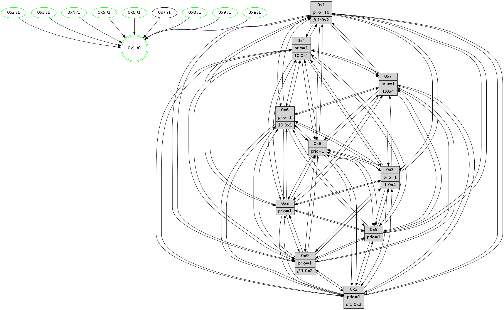

>> << IDX [start] -100 -25 -5 +0 +5 +25 +100 [835.059309006]
 Previous packets
----------------------------------------------------------------------
830.330525 beacon01(faad) #0 coord=01,02,03,04,05,06,07,0a,09,08 cycle=688.0ms assoc
-- color-indic=1 64 6d 96
830.340508 beacon02(faad) #0 coord=01,02,03,04,05,06,07,0a,09,08 cycle=688.0ms assoc 64 fe a7
830.350507 beacon03(faad) #0 coord=01,02,03,04,05,06,07,0a,09,08 cycle=688.0ms assoc 64 84 ea
830.360508 beacon04(faad) #0 coord=01,02,03,04,05,06,07,0a,09,08 cycle=688.0ms assoc 64 f3 00
830.370508 beacon05(faad) #0 coord=01,02,03,04,05,06,07,0a,09,08 cycle=688.0ms assoc 64 89 4d
830.380507 beacon06(faad) #0 coord=01,02,03,04,05,06,07,0a,09,08 cycle=688.0ms assoc 64 07 9a
830.390508 beacon07(faad) #0 coord=01,02,03,04,05,06,07,0a,09,08 cycle=688.0ms assoc 64 7d d7
830.400512 beacon0a(faad) #0 coord=01,02,03,04,05,06,07,0a,09,08 cycle=688.0ms assoc 64 0c dc
830.410514 beacon09(faad) #0 coord=01,02,03,04,05,06,07,0a,09,08 cycle=688.0ms assoc 64 82 0b
830.420513 beacon08(faad) #0 coord=01,02,03,04,05,06,07,0a,09,08 cycle=688.0ms assoc 64 f8 46
830.432962 [Hello(7): seq=531 sym=2,3,5,6,4,8,9,10,1 sysInfo=hasWarning stat=2:10,15,9,10/3:9,1,4,9/5:4,0,7,14/6:6,13,6,4/4:10,8,2,0/8:2,2,1,1/9:1,11,5,10/10:8,8,7,9/1:1,15,11,0]
830.435998 [Color(6) seq=174 @0:0 prio=1 >10.@1,1.@2,1.@3,1.@4]
830.437923 [Color(3) seq=172 @0:0 prio=1 >1.@4,1.@6,1.@7]
830.440597 [Hello(9): seq=475 sym=2,5,3,4,7,6,8,10,1 sysInfo=hasWarning stat=2:0,9,13,0/5:0,5,13,2/3:15,2,12,9/4:8,6,13,6/7:6,1,6,7/6:0,5,2,6/8:9,14,7,1/10:4,3,3,0/1:15,5,13,1]
830.444608 [Hello(4): seq=531 sym=5,7,6,2,3,9,8,10,1 sysInfo= stat=5:7,8,1,9/7:14,11,2,4/6:5,0,0,8/2:6,7,13,8/3:5,8,12,5/9:7,15,2,4/8:5,9,0,10/10:14,7,4,7/1:8,15,13,1]
830.447697 [Color(9) seq=180 @0:0 prio=1 >>1.@2,1.@3,1.@4]
830.451450 [Color(1) seq=212 @0:0 prio=10 >>1.@2,1.@3,1.@6]
830.453613 [Color(8) seq=187 @0:0 prio=1]
830.455943 [Hello(10): seq=464 sym=6,2,3,8,9,5,7,4,1 sysInfo=hasWarning stat=6:13,9,2,3/2:7,0,13,2/3:14,11,11,6/8:2,5,13,9/9:9,13,3,1/5:8,3,3,11/7:11,0,2,5/4:1,9,9,6/1:4,12,13,1]
830.460701 [Color(10) seq=152 @0:0 prio=1]
----------------------------------------------------------------------
831.118654 beacon01(faad) #0 coord=01,02,03,04,05,06,07,0a,09,08 cycle=688.0ms assoc
-- color-indic=1 64 79 f8
831.128637 beacon02(faad) #0 coord=01,02,03,04,05,06,07,0a,09,08 cycle=688.0ms assoc 64 ea c9
831.138636 beacon03(faad) #0 coord=01,02,03,04,05,06,07,0a,09,08 cycle=688.0ms assoc 64 90 84
831.148636 beacon04(faad) #0 coord=01,02,03,04,05,06,07,0a,09,08 cycle=688.0ms assoc 64 e7 6e
831.158638 beacon05(faad) #0 coord=01,02,03,04,05,06,07,0a,09,08 cycle=688.0ms assoc 64 9d 23
831.168638 beacon06(faad) #0 coord=01,02,03,04,05,06,07,0a,09,08 cycle=688.0ms assoc 64 13 f4
831.178639 beacon07(faad) #0 coord=01,02,03,04,05,06,07,0a,09,08 cycle=688.0ms assoc 64 69 b9
831.188643 beacon0a(faad) #0 coord=01,02,03,04,05,06,07,0a,09,08 cycle=688.0ms assoc 64 18 b2
831.208644 beacon08(faad) #0 coord=01,02,03,04,05,06,07,0a,09,08 cycle=688.0ms assoc 64 ec 28
831.219587 [Hello(1): seq=441 sym=4,2,9,5,10,3,8,6,7 sysInfo=coloring-mode-on,ColoringModeRequestCalled stat=4:13,13,4,0/2:9,1,13,9/9:9,7,15,2/5:8,14,6,3/10:6,12,10,9/3:4,15,10,0/8:15,11,11,9/6:3,4,11,8/7:0,4,0,11]
831.223831 [Hello(6): seq=532 sym=2,3,5,4,7,9,8,10,1 sysInfo= stat=2:2,3,11,7/3:14,14,2,7/5:11,15,4,11/4:14,2,14,0/7:5,10,14,3/9:0,1,3,1/8:14,11,1,8/10:14,3,7,8/1:12,13,9,1]
831.226253 [Hello(5): seq=532 sym=7,6,4,3,1,9,8,10,2 asym= sysInfo=hasWarning stat=7:1,6,4,6/6:8,11,3,8/4:14,12,7,5/3:2,14,10,7/1:1,14,13,1/9:7,7,0,1/8:11,3,12,7/10:13,10,9,2/2:5,12,4,0]
831.229992 [Color(4) seq=150 @0:0 prio=1 >10.@1,1.@2,1.@3,1.@6]
831.234005 [Color(5) seq=185 @0:0 prio=1]
831.239854 [Color(2) seq=177 @0:0 prio=1 >>1.@2,1.@3,1.@4]
----------------------------------------------------------------------
831.906785 beacon01(faad) #0 coord=01,02,03,04,05,06,07,0a,09,08 cycle=688.0ms assoc
-- color-indic=1 64 c5 fd
831.916766 beacon02(faad) #0 coord=01,02,03,04,05,06,07,0a,09,08 cycle=688.0ms assoc 64 56 cc
831.926768 beacon03(faad) #0 coord=01,02,03,04,05,06,07,0a,09,08 cycle=688.0ms assoc 64 2c 81
831.936768 beacon04(faad) #0 coord=01,02,03,04,05,06,07,0a,09,08 cycle=688.0ms assoc 64 5b 6b
831.946767 beacon05(faad) #0 coord=01,02,03,04,05,06,07,0a,09,08 cycle=688.0ms assoc 64 21 26
831.956768 beacon06(faad) #0 coord=01,02,03,04,05,06,07,0a,09,08 cycle=688.0ms assoc 64 af f1
831.966768 beacon07(faad) #0 coord=01,02,03,04,05,06,07,0a,09,08 cycle=688.0ms assoc 64 d5 bc
831.976773 beacon0a(faad) #0 coord=01,02,03,04,05,06,07,0a,09,08 cycle=688.0ms assoc 64 a4 b7
831.996774 beacon08(faad) #0 coord=01,02,03,04,05,06,07,0a,09,08 cycle=688.0ms assoc 64 50 2d
832.008006 [Hello(4): seq=532 sym=5,7,6,2,3,9,8,10,1 sysInfo= stat=5:7,9,1,9/7:14,11,2,4/6:5,0,0,8/2:7,8,13,8/3:5,8,12,5/9:7,0,2,4/8:5,10,0,10/10:15,8,4,7/1:9,0,13,1]
832.010953 [Hello(7): seq=532 sym=2,3,5,6,4,8,9,10,1 sysInfo=hasWarning stat=2:11,0,9,10/3:9,2,4,9/5:4,1,7,14/6:7,14,6,4/4:11,9,2,0/8:2,3,1,1/9:2,12,5,10/10:9,9,7,9/1:2,0,11,0]
832.013636 [Hello(10): seq=465 sym=6,2,3,8,9,5,7,4,1 sysInfo=hasWarning stat=6:14,9,2,3/2:7,1,13,2/3:15,11,11,6/8:2,5,13,9/9:9,13,3,1/5:8,4,3,11/7:12,0,2,5/4:1,10,9,6/1:5,12,13,1]
832.016513 [Color(3) seq=173 @0:0 prio=1 >1.@4,1.@6,1.@7]
832.020025 [Hello(9): seq=476 sym=2,5,3,4,7,6,8,10,1 sysInfo=hasWarning stat=2:1,10,13,0/5:0,6,13,2/3:15,2,12,9/4:8,7,13,6/7:7,1,6,7/6:1,5,2,6/8:9,15,7,1/10:5,4,3,0/1:0,6,13,1]
832.023150 [Color(6) seq=175 @0:0 prio=1 >10.@1,1.@2,1.@3,1.@4]
832.025075 [Color(9) seq=181 @0:0 prio=1 >>1.@2,1.@3,1.@4]
832.027907 [Color(10) seq=153 @0:0 prio=1]
832.029582 [Hello(8): seq=476 sym=5,2,3,4,7,6,9,10,1 sysInfo=hasWarning stat=5:5,6,4,10/2:1,0,13,2/3:2,7,1,9/4:9,6,15,6/7:9,11,3,9/6:4,9,13,8/9:8,13,1,0/10:5,4,1,0/1:9,12,9,0]
832.033672 [Color(8) seq=188 @0:0 prio=1]
----------------------------------------------------------------------
832.694916 beacon01(faad) #0 coord=01,02,03,04,05,06,07,0a,09,08 cycle=688.0ms assoc
-- color-indic=1 64 01 f3
832.704900 beacon02(faad) #0 coord=01,02,03,04,05,06,07,0a,09,08 cycle=688.0ms assoc 64 92 c2
832.714901 beacon03(faad) #0 coord=01,02,03,04,05,06,07,0a,09,08 cycle=688.0ms assoc 64 e8 8f
832.724899 beacon04(faad) #0 coord=01,02,03,04,05,06,07,0a,09,08 cycle=688.0ms assoc 64 9f 65
832.734901 beacon05(faad) #0 coord=01,02,03,04,05,06,07,0a,09,08 cycle=688.0ms assoc 64 e5 28
832.744899 beacon06(faad) #0 coord=01,02,03,04,05,06,07,0a,09,08 cycle=688.0ms assoc 64 6b ff
832.754901 beacon07(faad) #0 coord=01,02,03,04,05,06,07,0a,09,08 cycle=688.0ms assoc 64 11 b2
832.764905 beacon0a(faad) #0 coord=01,02,03,04,05,06,07,0a,09,08 cycle=688.0ms assoc 64 60 b9
832.784904 beacon08(faad) #0 coord=01,02,03,04,05,06,07,0a,09,08 cycle=688.0ms assoc 64 94 23
832.796426 [Hello(1): seq=442 sym=4,2,9,5,10,3,8,6,7 sysInfo=coloring-mode-on,ColoringModeRequestCalled stat=4:14,14,4,0/2:9,2,13,9/9:10,8,15,2/5:8,15,6,3/10:6,13,10,9/3:5,0,10,0/8:0,12,11,9/6:4,5,11,8/7:1,4,0,11]
832.799779 PARSE ERROR************************
Traceback (most recent call last):
File "PacketAnalysis.py", line 167, in showOperaPacket
structPacket = OperaPacketParse.parsePacket(rawPacket)
File "../../pkg-python/HipSens/Core/OperaPacketParse.py", line 461, in parsePacket
return parseHelloMessage(data)
File "../../pkg-python/HipSens/Core/OperaPacketParse.py", line 109, in parseHelloMessage
sysInfo,stability,colorInfo = struct.unpack("!HBB", linkList[0:4])
error: unpack requires a string argument of length 4
48 34 03 00 02 15 00 02 02 12 01 00 07 00 06 00 02 00 04 00 08 00 09 00 0a 00 05 00 53 04 00 00 00 00 4c 12 00 d7 5b 8c 01 11 8f fa 58 a4 5b 7f 80 26 7e 79 9c e1 53 cf
832.802262 [STC(1) #0.96 tree-change,inconsistent-stability,stable,to-color d=0]
832.804554 [Hello(2): seq=529 sym=4,5,7,6,3,9,8,10,1 sysInfo=hasWarning stat=4:8,9,13,4/5:8,12,13,3/7:3,5,4,7/6:5,15,0,6/3:15,6,11,4/9:0,7,14,1/8:15,8,11,7/10:9,14,13,7/1:1,11,9,1]
832.808561 [Hello(6): seq=533 sym=2,3,5,4,7,9,8,10,1 sysInfo= stat=2:2,4,11,7/3:15,14,2,7/5:12,0,4,11/4:15,3,14,0/7:5,10,14,3/9:0,2,3,1/8:15,12,1,8/10:14,4,7,8/1:12,13,9,1]
832.812685 [Hello(5): seq=533 sym=7,6,4,3,1,9,8,10,2 sysInfo=hasWarning stat=7:2,6,4,6/6:8,12,3,8/4:15,12,7,5/3:2,15,10,7/1:2,14,13,1/9:8,8,0,1/8:12,4,12,7/10:14,11,9,2/2:6,13,4,0]
832.816461 [Color(5) seq=186 @0:0 prio=1]
832.819331 [Color(4) seq=151 @0:0 prio=1 >10.@1,1.@2,1.@3,1.@6]
832.821089 [Color(2) seq=178 @0:0 prio=1 >>1.@2,1.@3,1.@4]
----------------------------------------------------------------------
833.483048 beacon01(faad) #0 coord=01,02,03,04,05,06,07,0a,09,08 cycle=688.0ms assoc
-- color-indic=1 64 bd f6
833.493028 beacon02(faad) #0 coord=01,02,03,04,05,06,07,0a,09,08 cycle=688.0ms assoc 64 2e c7
833.503030 beacon03(faad) #0 coord=01,02,03,04,05,06,07,0a,09,08 cycle=688.0ms assoc 64 54 8a
833.513031 beacon04(faad) #0 coord=01,02,03,04,05,06,07,0a,09,08 cycle=688.0ms assoc 64 23 60
833.523032 beacon05(faad) #0 coord=01,02,03,04,05,06,07,0a,09,08 cycle=688.0ms assoc 64 59 2d
833.533030 beacon06(faad) #0 coord=01,02,03,04,05,06,07,0a,09,08 cycle=688.0ms assoc 64 d7 fa
833.543031 beacon07(faad) #0 coord=01,02,03,04,05,06,07,0a,09,08 cycle=688.0ms assoc 64 ad b7
833.553035 beacon0a(faad) #0 coord=01,02,03,04,05,06,07,0a,09,08 cycle=688.0ms assoc 64 dc bc
833.573035 beacon08(faad) #0 coord=01,02,03,04,05,06,07,0a,09,08 cycle=688.0ms assoc 64 28 26
833.584589 [Hello(4): seq=533 sym=5,7,6,2,3,9,8,10,1 sysInfo= stat=5:7,9,1,9/7:15,11,2,4/6:5,1,0,8/2:7,9,13,8/3:5,9,12,5/9:8,1,2,4/8:6,11,0,10/10:0,9,4,7/1:10,0,13,1]
833.587514 [Color(1) seq=214 @0:0 prio=10 >>1.@2,1.@3,1.@4]
833.589367 [Hello(8): seq=477 sym=5,2,3,4,7,6,9,10,1 sysInfo=hasWarning stat=5:6,7,4,10/2:2,1,13,2/3:3,7,1,9/4:10,7,15,6/7:9,11,3,9/6:5,9,13,8/9:8,13,1,0/10:5,4,1,0/1:10,12,10,0]
833.591922 [Color(6) seq=176 @0:0 prio=1 >10.@1,1.@2,1.@3,1.@4]
833.594871 [STC(8)->1 #0.96 tree-change,inconsistent-stability,stable,to-color d=1]
833.597035 [STC(3)->1 #0.96 tree-change,inconsistent-stability,stable,to-color d=1]
833.598408 [Color(8) seq=189 @0:0 prio=1]
833.599964 [Color(3) seq=174 @0:0 prio=1 >1.@4,1.@6,1.@7]
833.602442 [Hello(7): seq=533 sym=2,3,5,6,4,8,9,10,1 sysInfo=hasWarning stat=2:12,1,9,10/3:10,3,4,9/5:5,2,7,14/6:8,15,6,4/4:11,10,2,0/8:3,4,1,1/9:3,13,5,10/10:10,10,7,9/1:3,0,12,0]
833.605589 [Hello(10): seq=466 sym=6,2,3,8,9,5,7,4,1 sysInfo=hasWarning stat=6:15,9,2,3/2:8,2,13,2/3:0,11,11,6/8:3,6,13,9/9:9,13,3,1/5:9,5,3,11/7:12,0,2,5/4:2,11,9,6/1:6,12,14,1]
833.608396 [STC(10)->1 #0.96 tree-change,inconsistent-stability,stable,to-color d=1]
833.612280 [Color(10) seq=154 @0:0 prio=1]
833.613842 [STC(7)->1 #0.96 tree-change,inconsistent-stability,to-color d=1]
833.617957 [STC(9)->1 #0.96 tree-change,inconsistent-stability,stable,to-color d=1]
833.619894 [Color(9) seq=182 @0:0 prio=1 >>1.@2,1.@3,1.@4]
----------------------------------------------------------------------
834.271179 beacon01(faad) #0 coord=01,02,03,04,05,06,07,0a,09,08 cycle=688.0ms assoc
-- color-indic=1 64 89 ee
834.281163 beacon02(faad) #0 coord=01,02,03,04,05,06,07,0a,09,08 cycle=688.0ms assoc 64 1a df
834.291160 beacon03(faad) #0 coord=01,02,03,04,05,06,07,0a,09,08 cycle=688.0ms assoc 64 60 92
834.301163 beacon04(faad) #0 coord=01,02,03,04,05,06,07,0a,09,08 cycle=688.0ms assoc 64 17 78
834.311162 beacon05(faad) #0 coord=01,02,03,04,05,06,07,0a,09,08 cycle=688.0ms assoc 64 6d 35
834.321163 beacon06(faad) #0 coord=01,02,03,04,05,06,07,0a,09,08 cycle=688.0ms assoc 64 e3 e2
834.331163 beacon07(faad) #0 coord=01,02,03,04,05,06,07,0a,09,08 cycle=688.0ms assoc 64 99 af
834.341166 beacon0a(faad) #0 coord=01,02,03,04,05,06,07,0a,09,08 cycle=688.0ms assoc 64 e8 a4
834.351167 beacon09(faad) #0 coord=01,02,03,04,05,06,07,0a,09,08 cycle=688.0ms assoc 64 66 73
834.361169 beacon08(faad) #0 coord=01,02,03,04,05,06,07,0a,09,08 cycle=688.0ms assoc 64 1c 3e
834.372699 [Hello(6): seq=534 sym=2,3,5,4,7,9,8,10,1 sysInfo= stat=2:2,5,11,7/3:15,15,3,7/5:13,1,4,11/4:0,4,14,0/7:6,10,15,3/9:0,3,4,1/8:15,13,2,8/10:15,5,8,8/1:12,13,9,1]
834.375765 [Hello(1): seq=443 sym=4,2,9,5,10,3,8,6,7 sysInfo=coloring-mode-on,ColoringModeRequestCalled stat=4:15,15,4,0/2:10,3,13,9/9:10,9,0,2/5:9,0,6,3/10:7,14,11,9/3:5,1,11,0/8:1,13,12,9/6:5,6,11,8/7:2,4,1,11]
834.378484 [Hello(5): seq=534 sym=7,6,4,3,1,9,8,10,2 sysInfo=hasWarning stat=7:3,6,4,6/6:8,13,3,8/4:0,13,7,5/3:2,0,11,7/1:3,15,13,1/9:9,9,1,1/8:13,5,13,7/10:15,12,10,2/2:6,14,4,0]
834.383207 [Color(5) seq=187 @0:0 prio=1]
834.387386 [Hello(2): seq=530 sym=4,5,7,6,3,9,8,10,1 sysInfo=hasWarning stat=4:9,9,13,4/5:8,12,13,3/7:4,5,5,7/6:5,0,0,6/3:0,7,12,4/9:0,8,15,1/8:0,9,12,7/10:10,15,14,7/1:2,12,9,1]
834.391020 [Hello(3): seq=534 sym=1,7,6,2,4,8,9,10,5 sysInfo= stat=1:7,13,1,0/7:13,8,12,5/6:2,1,1,0/2:11,0,15,8/4:5,11,8,5/8:15,7,11,5/9:6,3,1,8/10:10,8,15,7/5:2,15,12,9]
834.393524 [Color(2) seq=179 @0:0 prio=1 >>1.@2,1.@3,1.@4]
834.399440 [Color(4) seq=152 @0:0 prio=1 >10.@1,1.@2,1.@3,1.@6]